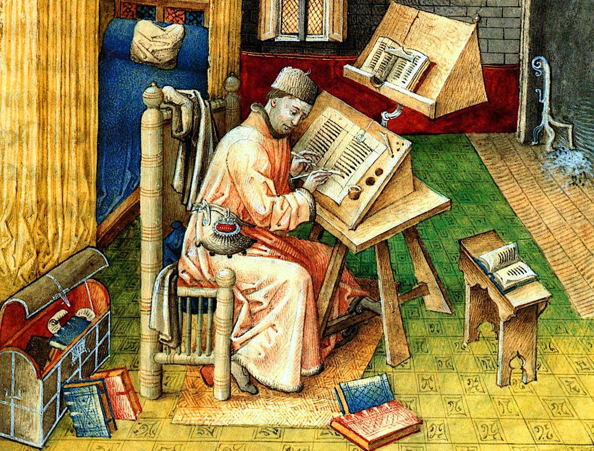
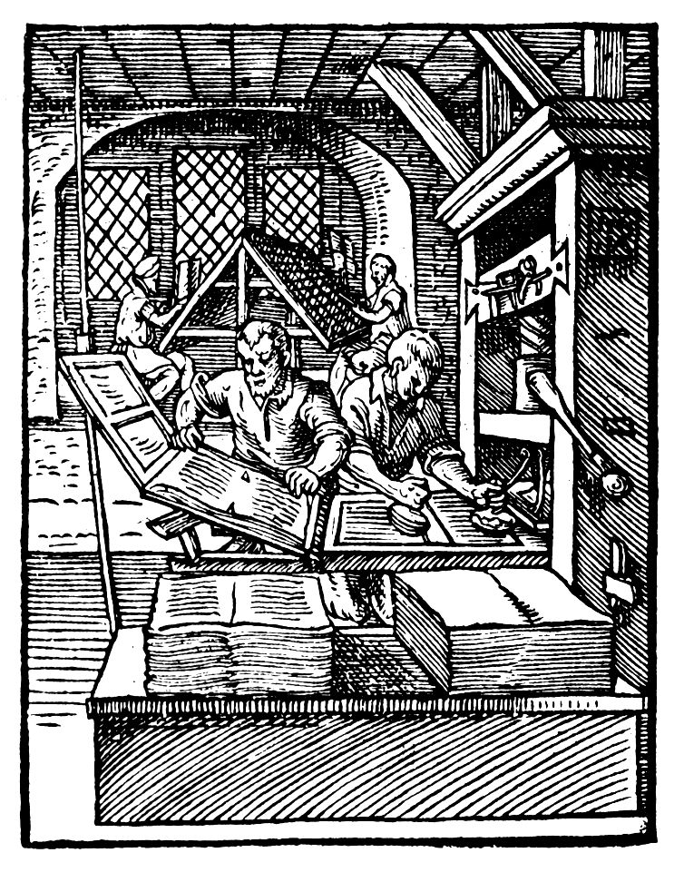

If I want to know something today, I search for it. I can type a question into Google, ask a language model, watch a video or download a paper before I have finished forming the thought. Information feels almost weightless.
For most of human history it was anything but.

Before printing, books were copied by hand. Imagine wanting a second copy of one. There was no printer, no photocopier, no Ctrl+C. Someone had to physically reproduce the words — page by page, line by line, letter by letter.
Scribes spent their working lives doing exactly this, and monasteries, universities and wealthy households became the institutions that preserved and reproduced what was known. A book was not simply a container for information. It was a physical object representing months of somebody's labour. If you wanted another copy, you needed another person.
Information was expensive to reproduce.
Then came an idea that sounds obvious to us now: what if the individual letters were made separately, so they could be rearranged and reused?
The part I had wrong
I had always filed this under Gutenberg, fifteenth-century Germany. That turns out to be the part of the story most of us get wrong. Movable type was not a European invention. Bi Sheng was printing with ceramic type in China around 1040, and the oldest surviving book printed with metal movable type is Korean — the Jikji, printed in 1377, some seventy-eight years before the Gutenberg Bible.
So what did Gutenberg actually do?
He solved the engineering. He developed an alloy of lead, tin and antimony that cast cleanly and wore slowly, and which stayed the standard for roughly five hundred years. He devised a punch-and-matrix hand mould that could turn out thousands of identical pieces of type. He worked out an oil-based ink that would hold to metal instead of beading off it. And he adapted the screw press so that all of it could be brought together under even pressure.
The idea was not the bottleneck. The system around the idea was.

Once that system worked, the economics of information changed shape. The expensive part moved to the front: setting the type for a page. Once the type was set, each additional copy became comparatively cheap.
That distinction matters more than it first appears. The press did not simply make books faster. It changed the cost of reproducing knowledge.
And when the cost of reproduction falls, other things follow. More copies circulate. More people read them. More people are in a position to disagree in writing, and to be read in turn. Knowledge starts moving through a society differently.
That is why the printing press was much more than a better book-making machine.
Where this gets interesting
AI is not a printing press, and I want to be careful not to stretch the analogy further than it goes. But each of these technologies moved a different cost. The press made information dramatically cheaper to reproduce. The internet made it dramatically cheaper to distribute. And AI appears to be making some kinds of information dramatically cheaper to produce.
If Gutenberg's real contribution was the system rather than the idea, then that is probably the thing to watch here too: not the models on their own, but whether the machinery around them gets built well enough for the cost to genuinely fall — and for whom it falls.
Which leaves the question I keep turning over. What happens to a society when producing certain kinds of intellectual work stops being expensive?